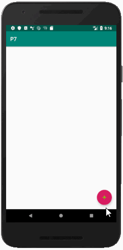
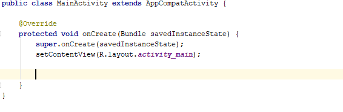
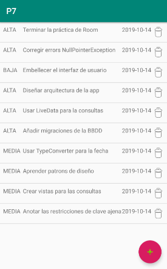
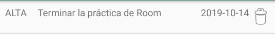

Room proporciona una capa de abstracción para facilitar el acceso a bases de datos SQLite.
Construiremos una aplicación de tipo Tareas Pendientes (TODO-List). Este tipo de aplicaciones son consideradas el HelloWorld de los frameworks.
https://github.com/gerardfp/room

Establece la version mínima del SDK a 26:
minSdkVersion 26
Añade las siguientes dependencias:
Room

Dependencia en el archivo
implementation 'androidx.room:room-runtime:2.1.0' annotationProcessor 'androidx.room:room-compiler:2.1.0'
Lifecycle
Las Activities de la App accederan a la Base de datos a través de un ViewModel.

Dependencia en el archivo
implementation 'androidx.lifecycle:lifecycle-extensions:2.1.0'
RecyclerView y Material
La lista de tareas se mostrará en la Activity usando un
Para ir a la Activity de añadir una Tarea habrá un
implementation 'androidx.recyclerview:recyclerview:1.0.0' implementation 'com.google.android.material:material:1.0.0'
La app guardará los datos en dos tablas:

Para obtener cada Tarea con el detalle de su prioridad, necesitaremos la siguiente Vista (consulta):
SELECT Tarea.id, Tarea.descripcion, Tarea.fecha, Prioridad.descripcion AS prioridad FROM Tarea JOIN Prioridad ON Tarea.prioridadId = Prioridad.id

Para usar Room hay que crear 3 componentes: Entidades, DAO y Database.
- Entidad: representa una tabla de la base de datos.
- DAO: contiene los métodos con las consultas utilitzados para acceder a la base de datos
- Base de datos: contiene el manejador de la base de datos.

El acceso a datos desde una

Son las tablas y vistas de nuestra base de datos. Se crea una clase por cada tabla o vista. Se anotan dichas clases con
Para nuestra app crearemos las dos clases correspondientes a las tablas (
import androidx.room.Entity; import androidx.room.ForeignKey; import androidx.room.PrimaryKey; @Entity(foreignKeys = @ForeignKey(entity = Prioridad.class, parentColumns = "id", childColumns = "prioridadId")) public class Tarea { @PrimaryKey(autoGenerate = true) public int id; public String descripcion; public String fecha; public int prioridadId; public Tarea(String descripcion, String fecha, int prioridadId) { this.descripcion = descripcion; this.fecha = fecha; this.prioridadId = prioridadId; } }
import androidx.room.Entity; import androidx.room.PrimaryKey; @Entity public class Prioridad { @PrimaryKey(autoGenerate = true) public int id; public String descripcion; public Prioridad(String descripcion) { this.descripcion = descripcion; } @Override public String toString() { return descripcion; } }
También definiremos la Vista para el detalle de tareas:
import androidx.room.DatabaseView; @DatabaseView("SELECT Tarea.id, Tarea.descripcion, Tarea.fecha, Prioridad.descripcion AS prioridad " + "FROM Tarea JOIN Prioridad ON Tarea.prioridadId = Prioridad.id") public class TareaDetalle { public int id; public String descripcion; public String fecha; public String prioridad; }
En la clase DAO es donde definimos las consultas que necesitamos para acceder a nuestros datos.
import java.util.List; import androidx.lifecycle.LiveData; import androidx.room.Dao; import androidx.room.Insert; import androidx.room.Query; @Dao public abstract class TareasAppDao { @Insert public abstract void insertarPrioridad(Prioridad prioridad); @Query("SELECT * FROM Prioridad") public abstract LiveData<List<Prioridad>> obtenerPrioridades(); @Insert public abstract void insertarTarea(Tarea tarea); @Query("DELETE FROM Tarea WHERE id=:id") public abstract void eliminarTarea(int id); @Query("SELECT * FROM TareaDetalle") public abstract LiveData<List<TareaDetalle>> obtenerTareasDetalle(); }
Usamos el patrón Singleton para obtener una instancia de la base de datos.
Añadimos el callback
Añadimos la opcion
import android.content.Context; import android.os.AsyncTask; import androidx.annotation.NonNull; import androidx.room.Database; import androidx.room.Room; import androidx.room.RoomDatabase; import androidx.sqlite.db.SupportSQLiteDatabase; @Database(entities = {Tarea.class, Prioridad.class}, views = {TareaDetalle.class}, exportSchema = false, version = 1) public abstract class TareasAppDatabase extends RoomDatabase { private static TareasAppDatabase INSTANCE; public abstract TareasAppDao dao(); public static TareasAppDatabase getInstance(final Context context){ if(INSTANCE == null){ synchronized (TareasAppDatabase.class) { if(INSTANCE == null) { INSTANCE = Room.databaseBuilder(context, TareasAppDatabase.class, "tareas-db") .fallbackToDestructiveMigration() .addCallback(new Callback() { @Override public void onCreate(@NonNull SupportSQLiteDatabase db) { super.onCreate(db); insertarDatosIniciales(); } }) .build(); } } } return INSTANCE; } private static void insertarDatosIniciales(){ AsyncTask.execute(new Runnable() { @Override public void run() { INSTANCE.dao().insertarPrioridad(new Prioridad("ALTA")); INSTANCE.dao().insertarPrioridad(new Prioridad("MEDIA")); INSTANCE.dao().insertarPrioridad(new Prioridad("BAJA")); } }); } }
El ViewModel expone métodos para ser usados desde las activities y realiza las acciones correspondientes sobre el DAO.
Es importante tener en cuenta que todas las operaciones se han de hacer en segundo plano, usando la clase
Para las operaciones que retornan datos (como las consultas), usamos la clase
import android.app.Application; import android.os.AsyncTask; import java.util.List; import androidx.annotation.NonNull; import androidx.lifecycle.AndroidViewModel; import androidx.lifecycle.LiveData; public class TareasAppViewModel extends AndroidViewModel { private TareasAppDao dao; public TareasAppViewModel(@NonNull Application application) { super(application); dao = TareasAppDatabase.getInstance(application).dao(); } public LiveData<List<Prioridad>> obtenerPrioridades(){ return dao.obtenerPrioridades(); } public LiveData<List<TareaDetalle>> obtenerTareasDetalle(){ return dao.obtenerTareasDetalle(); } public void insertarTarea(final Tarea tarea){ AsyncTask.execute(new Runnable() { @Override public void run() { dao.insertarTarea(tarea); } }); } public void eliminarTarea(final int id){ AsyncTask.execute(new Runnable() { @Override public void run() { dao.eliminarTarea(id); } }); } }
ListaTareasFragment
El
También hay un

La parte interesante del
Se añade un
import android.os.Bundle; import androidx.annotation.NonNull; import androidx.annotation.Nullable; import androidx.fragment.app.Fragment; import androidx.lifecycle.Observer; import androidx.lifecycle.ViewModelProviders; import androidx.navigation.NavController; import androidx.navigation.Navigation; import androidx.recyclerview.widget.DividerItemDecoration; import androidx.recyclerview.widget.RecyclerView; import android.view.LayoutInflater; import android.view.View; import android.view.ViewGroup; import android.widget.ImageView; import android.widget.TextView; import java.util.List; public class ListaTareasFragment extends Fragment { private NavController navController; private TareasAppViewModel tareasAppViewModel; private TareasAdapter tareasAdapter; public ListaTareasFragment() {} @Override public View onCreateView(LayoutInflater inflater, ViewGroup container, Bundle savedInstanceState) { return inflater.inflate(R.layout.fragment_lista_tareas, container, false); } @Override public void onViewCreated(@NonNull View view, @Nullable Bundle savedInstanceState) { super.onViewCreated(view, savedInstanceState); navController = Navigation.findNavController(view); tareasAppViewModel = ViewModelProviders.of(requireActivity()).get(TareasAppViewModel.class); view.findViewById(R.id.fab_nuevaTarea).setOnClickListener(new View.OnClickListener() { @Override public void onClick(View view) { navController.navigate(R.id.nuevaTareaFragment); } }); RecyclerView recyclerView = view.findViewById(R.id.recycler_listaTareas); recyclerView.addItemDecoration(new DividerItemDecoration(recyclerView.getContext(), DividerItemDecoration.VERTICAL)); tareasAdapter = new TareasAdapter(); recyclerView.setAdapter(tareasAdapter); tareasAppViewModel.obtenerTareasDetalle().observe(this, new Observer<List<TareaDetalle>>() { @Override public void onChanged(List<TareaDetalle> queryResult) { tareasAdapter.establecerListaTareas(queryResult); } }); } class TareasAdapter extends RecyclerView.Adapter<TareasAdapter.TareaViewHolder>{ List<TareaDetalle> tareaDetalleList; @NonNull @Override public TareaViewHolder onCreateViewHolder(@NonNull ViewGroup parent, int viewType) { return new TareaViewHolder(LayoutInflater.from(parent.getContext()).inflate(R.layout.viewholder_tarea, parent, false)); } @Override public void onBindViewHolder(@NonNull TareaViewHolder holder, int position) { final TareaDetalle tareaDetalle = tareaDetalleList.get(position); holder.descripcionTextView.setText(tareaDetalle.descripcion); holder.fechaTextView.setText(tareaDetalle.fecha); holder.prioridadTextView.setText(tareaDetalle.prioridad); holder.eliminarImageView.setOnClickListener(new View.OnClickListener() { @Override public void onClick(View view) { tareasAppViewModel.eliminarTarea(tareaDetalle.id); } }); } @Override public int getItemCount() { return tareaDetalleList != null ? tareaDetalleList.size() : 0; } void establecerListaTareas(List<TareaDetalle> list){ tareaDetalleList = list; notifyDataSetChanged(); } class TareaViewHolder extends RecyclerView.ViewHolder { TextView descripcionTextView, fechaTextView, prioridadTextView; ImageView eliminarImageView; TareaViewHolder(@NonNull View itemView) { super(itemView); descripcionTextView = itemView.findViewById(R.id.textview_descripcion); fechaTextView = itemView.findViewById(R.id.textview_fecha); prioridadTextView = itemView.findViewById(R.id.textview_prioridad); eliminarImageView = itemView.findViewById(R.id.imageview_eliminar); } } } }
<?xml version="1.0" encoding="utf-8"?> <FrameLayout xmlns:android="http://schemas.android.com/apk/res/android" xmlns:tools="http://schemas.android.com/tools" android:layout_width="match_parent" android:layout_height="match_parent" xmlns:app="http://schemas.android.com/apk/res-auto" tools:context=".view.ListaTareasFragment"> <androidx.coordinatorlayout.widget.CoordinatorLayout android:layout_width="match_parent" android:layout_height="match_parent"> <androidx.recyclerview.widget.RecyclerView android:id="@+id/recycler_listaTareas" android:layout_width="match_parent" android:layout_height="wrap_content" app:layoutManager="androidx.recyclerview.widget.LinearLayoutManager"/> <com.google.android.material.floatingactionbutton.FloatingActionButton android:id="@+id/fab_nuevaTarea" android:layout_width="wrap_content" android:layout_height="wrap_content" android:layout_gravity="bottom|end" android:layout_margin="16dp" app:srcCompat="@android:drawable/ic_input_add" /> </androidx.coordinatorlayout.widget.CoordinatorLayout> </FrameLayout>

<?xml version="1.0" encoding="utf-8"?> <LinearLayout xmlns:android="http://schemas.android.com/apk/res/android" xmlns:app="http://schemas.android.com/apk/res-auto" android:orientation="horizontal" android:layout_width="match_parent" android:layout_height="wrap_content" android:padding="8dp"> <TextView android:id="@+id/textview_prioridad" android:layout_width="0dp" android:layout_height="wrap_content" android:layout_weight="2"/> <TextView android:id="@+id/textview_descripcion" android:layout_width="0dp" android:layout_height="wrap_content" android:layout_weight="10" /> <TextView android:id="@+id/textview_fecha" android:layout_width="0dp" android:layout_height="wrap_content" android:layout_weight="3" /> <ImageView android:id="@+id/imageview_eliminar" android:layout_width="wrap_content" android:layout_height="wrap_content" app:srcCompat="@android:drawable/ic_menu_delete" /> </LinearLayout>
NuevaTareaFragment

La parte complicada de esta activity es que el
Cuando el usuario selecciona una prioridad del Spinner, la
import android.os.Bundle; import androidx.annotation.NonNull; import androidx.annotation.Nullable; import androidx.fragment.app.Fragment; import androidx.lifecycle.Observer; import androidx.lifecycle.ViewModelProviders; import androidx.navigation.NavController; import androidx.navigation.Navigation; import android.view.LayoutInflater; import android.view.View; import android.view.ViewGroup; import android.widget.AdapterView; import android.widget.ArrayAdapter; import android.widget.EditText; import android.widget.Spinner; import java.time.LocalDateTime; import java.time.format.DateTimeFormatter; import java.util.List; public class NuevaTareaFragment extends Fragment { private TareasAppViewModel tareasAppViewModel; private NavController navController; private EditText descripcionEditText; private Spinner prioridadSpinner; private int idPrioridadSeleccionada; public NuevaTareaFragment() {} @Override public View onCreateView(LayoutInflater inflater, ViewGroup container, Bundle savedInstanceState) { return inflater.inflate(R.layout.fragment_nueva_tarea, container, false); } @Override public void onViewCreated(@NonNull View view, @Nullable Bundle savedInstanceState) { super.onViewCreated(view, savedInstanceState); navController = Navigation.findNavController(view); tareasAppViewModel = ViewModelProviders.of(requireActivity()).get(TareasAppViewModel.class); descripcionEditText = view.findViewById(R.id.edittext_descripcion); prioridadSpinner = view.findViewById(R.id.spinner_prioridad); view.findViewById(R.id.button_crearTarea).setOnClickListener(new View.OnClickListener() { @Override public void onClick(View view) { if(descripcionEditText.getText().toString().isEmpty()){ descripcionEditText.setError("Introduzca la descripción"); return; } tareasAppViewModel.insertarTarea(new Tarea(descripcionEditText.getText().toString(), LocalDateTime.now().format(DateTimeFormatter.ofPattern("yyyy-MM-dd")), idPrioridadSeleccionada)); navController.popBackStack(); } }); tareasAppViewModel.obtenerPrioridades().observe(this, new Observer<List<Prioridad>>() { @Override public void onChanged(final List<Prioridad> prioridades) { prioridadSpinner.setAdapter(new ArrayAdapter<>(requireActivity(), R.layout.support_simple_spinner_dropdown_item, prioridades)); prioridadSpinner.setOnItemSelectedListener(new AdapterView.OnItemSelectedListener() { @Override public void onItemSelected(AdapterView<?> adapterView, View view, int i, long l) { idPrioridadSeleccionada = prioridades.get(i).id; } @Override public void onNothingSelected(AdapterView<?> adapterView) {} }); } }); } }
<?xml version="1.0" encoding="utf-8"?> <FrameLayout xmlns:android="http://schemas.android.com/apk/res/android" xmlns:tools="http://schemas.android.com/tools" android:layout_width="match_parent" android:layout_height="match_parent" tools:context=".view.NuevaTareaFragment"> <LinearLayout android:layout_width="match_parent" android:layout_height="wrap_content" android:orientation="vertical"> <EditText android:id="@+id/edittext_descripcion" android:layout_width="match_parent" android:layout_height="wrap_content" android:hint="Descripción"/> <Spinner android:id="@+id/spinner_prioridad" android:layout_width="match_parent" android:layout_height="wrap_content"/> <Button android:id="@+id/button_crearTarea" android:layout_width="match_parent" android:layout_height="wrap_content" android:text="AÑADIR TAREA"/> </LinearLayout> </FrameLayout>